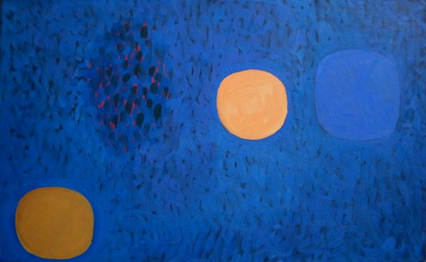

Frank Beanland
b.1936
Artist Biography
Frank Beanland was born in Bridlington, Yorkshire. A bold, colourful abstract artist, he attended Hull College of Art 1952-57, then Slade School of Fine Art 1959-61. A Boise travelling scholarship took him to Stockholm 1961-2. Beanland began showing in 1960 at Young Contemporaries then in mixed shows at Drian Galleries, London Group and Gimpel Fils. He settled for a while in the 1960s in Cornwall where he produced much of his best work. Solo exhibitions include Smiths Galleries One in 1960 and Belgrave Galleries 1999. His work is held by a number of public collections including Leverhulme Trust and Slade School and the Lodz Museum in Poland.

Mottled Ground, 3 Discs